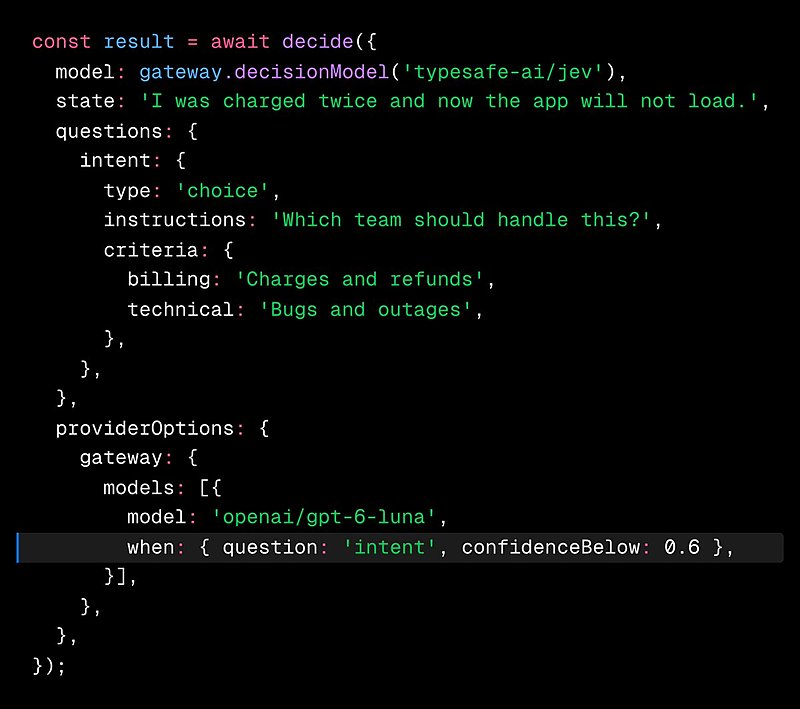

AI 日报 · 10月8日
AI 界面更灵活，小模型更讲成本
OpenAI 让 ChatGPT 的 GPT‑6 按问题生成交互界面，Anthropic 发布面向高频任务的 Haiku 5.5。Builder 讨论提示方式、图像编辑、模型回退和团队 Agent；播客追问何时值得后训练。
交互界面
小模型
Agent 工作流
GitHub Trending
6
Builder 动态
5
今日上榜项目
3
官方资料
1
公开视频
今日要点
OpenAI 宣布 GPT‑6 的 Intelligent UI，可在回答中组合图表、按钮、表单等组件，并逐步显示生成中的界面。10 月 7 日起向 Plus、Pro、Business 和 Enterprise 的 Chat 会话推出，Free 与 Go 计划次日开始；这次发布不改变 Work 和 Codex 所用模型。
Anthropic 发布 Claude Haiku 5.5，定位摘要、分类、查询及子 Agent 等高频任务。官方称其平均运行成本较 Haiku 4.5 低约 75%，同时下调 Sonnet 5.5 的缓存读取价格；性能与成本数字来自厂商披露，实际选择仍应按自己的任务评测。
深度对话
Applied Compute：先优化工作流，再考虑后训练
Redpoint Ventures 的《Unsupervised Learning》10 月 6 日采访 Applied Compute CEO Yash Patil。以下是他在访谈中的判断，不等于所有团队都应训练自己的模型。
先找到可衡量的目标
Patil 把强化学习比作爬坡：优化器可以向目标前进，难点是定义值得攀登的目标。因此企业要先建立适合自己业务的评测。
先榨干上下文与工具层
访谈建议先改善上下文、工具和 Agent 工作流；当这些手段已充分优化，且仍有专有数据与稳定需求时，再考虑改动模型权重。
大规模推理才更容易摊薄训练投入
Patil 认为后训练通常先在高调用量的成熟任务上体现成本和质量价值。这是 Applied Compute 的业务判断，投入产出仍需逐项核算。
资讯精选
官方发布与产品变化
Anthropic｜Claude Haiku 5.5 上线
新模型提供可调节的 effort 设置，已在 Claude Platform 及主要云平台提供。官方列出每百万输入 token 价格：10 万 token 以内的提示为 0.10 美元，超过后为 0.50 美元；价格与评测均应以发布页条件为准。
OpenAI｜GPT‑6 的回答可以包含交互组件
Intelligent UI 使用可流式显示的原生组件与编译器，让图解、比较和小工具直接出现在会话中。OpenAI 也说明，是否使用交互界面会随问题而变，简单问题仍可用纯文本回答。
OpenAI｜青少年学习工具继续扩展
OpenAI 公布面向美国高中生的 College Planner 计划，并为青少年体验加入学习卡片与测验。College Planner 尚未上线；官方称未来还会扩大适用地区和教育路径。
Builder 动态
产品一线的六个判断
Boris Cherny｜像给同事交任务一样说明目标
Anthropic 的 Cherny 认为，给 Claude 的提示通常不必过度搭脚手架；更重要的是说明要做什么、投入多少精力，以及怎样验证结果。这是他的实践建议，复杂任务仍需提供必要约束。
Josh Woodward｜关注图像的蒙版编辑
Google Labs 的 Woodward 分享 Nano Banana 2.1 的蒙版编辑示例，并说这是本次更新中他最喜欢的能力。配图来自他引用的 Nano Banana 原帖；帖子展示的是产品样例，不是独立效果评测。
Guillermo Rauch｜低置信度决策交给回退模型
Vercel 的 Rauch 推荐 AI Gateway 的一个测试功能：当主模型的判断置信度低于阈值，可由回退模型重做决策。原帖代码示例展示阈值设置；真实效果仍取决于任务、阈值与回退模型。

Peter Steinberger｜让团队 Agent 主动找到代码负责人
Steinberger 说他把团队 Agent 接入 X 来更快触发工作；Agent 会查找相关代码最近的贡献者，并在团队服务器中提醒他们。帖子描述的是其团队当前流程，未给出效率评测。
Aaron Levie｜安全团队将面对新的 Agent 风险
Box CEO Levie 认为，AI 生成代码问题、Agent 攻击与意外的数据搜寻会增加企业安全工作量，同时也会推动安全 Agent 产品出现。这是趋势判断，不能从帖子推算事件规模。
Garry Tan｜用提示迭代图形实验
YC 的 Tan 分享一项图形实验进展：又经过约三次提示，演示在 640×480 分辨率下达到约 35 帧每秒，并使用 8 个 CPU 核心处理每帧。这是单次演示数据，不代表一般性能。
GitHub Trending
今日上榜项目


根据 10 月 8 日 GitHub Trending 实时榜单整理；星标、分叉和语言为本次 GitHub API 快照，会持续变化。已避开昨日重点项目。
今日思考
今天的发布让两个设计问题更具体：用户究竟需要文本、图解，还是可操作的小工具？任务需要高能力模型，还是更便宜的高频小模型？播客提醒我们，回答这两个问题之前，先把任务目标、评测和工作流定义清楚。今日一问：你手头的一项重复任务，最值得改进的是交互方式、调用成本，还是成功标准？
参考来源
OpenAI｜GPT‑6 与 Intelligent UI
Anthropic｜Claude Haiku 5.5
OpenAI｜青少年学习工具
Redpoint Ventures｜Applied Compute CEO 访谈
Boris Cherny｜提示实践
Josh Woodward｜图像蒙版编辑
Nano Banana｜原始图像演示
Guillermo Rauch｜低置信度回退
Vercel Developers｜AI Gateway 功能
Peter Steinberger｜团队 Agent
Aaron Levie｜企业安全判断
Garry Tan｜图形实验
GitHub｜10 月 8 日 Trending
mattpocock/skills
ayghri/i-have-adhd
cathrynlavery/diagram-design
cloudflare/security-audit-skill
manaflow-ai/cmux